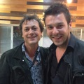

Stories

Posted May 30, 2014, by Kim Mordaunt, Director, The Rocket posted in Articles
Courageous Stories: The Rocket Director Kim Mordaunt in Bosnia & Herzegovina
The Banja Luka Youth House screening was a special one for me. Firstly, a young woman, Natasa Maric, talked about the “loss”…
Posted May 27, 2014, by Caitrin Rogers, producer, 20 Feet From Stardom posted in Articles
In A Land of Contradiction, 20 Feet From Stardom Shares an Inspiring Message
A week ago, after 17 hours of travel, we landed as the sun was setting over Sarajevo, where vast mountains were silhouetted…
Posted May 22, 2014, by Cornelia Principe, producer, The World Before Her posted in Articles
The Language of Film: Producer Cornelia Principe screens The World Before Her in China
The chance to screen and discuss The World Before Her with an audience in China was truly a unique and thrilling experience.…
Film Forward In the News
- PCAH’s Film Forward’s Dancing In Jaffa and the Power of Cultural Diplomacy, President's Committee on the Arts and Humanities
- U.S. Film Forward program to tour Taiwan in May, Taiwan News
- Berks Alumnus Moderates Film Forward Discussion at Exeter Community Library, bctv
- Spirit of Sundance comes to region as ‘Film Forward’, Centre Daily Times
- Rowland Theatre screens Sundance film about public education, Centre Daily Times